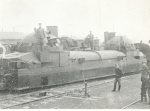
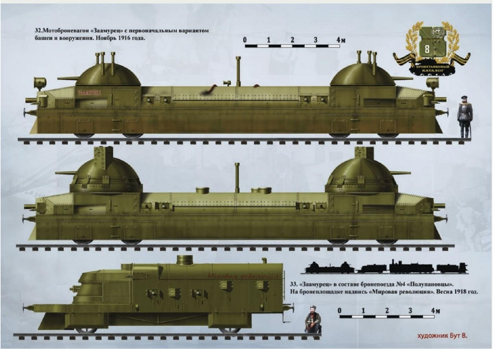
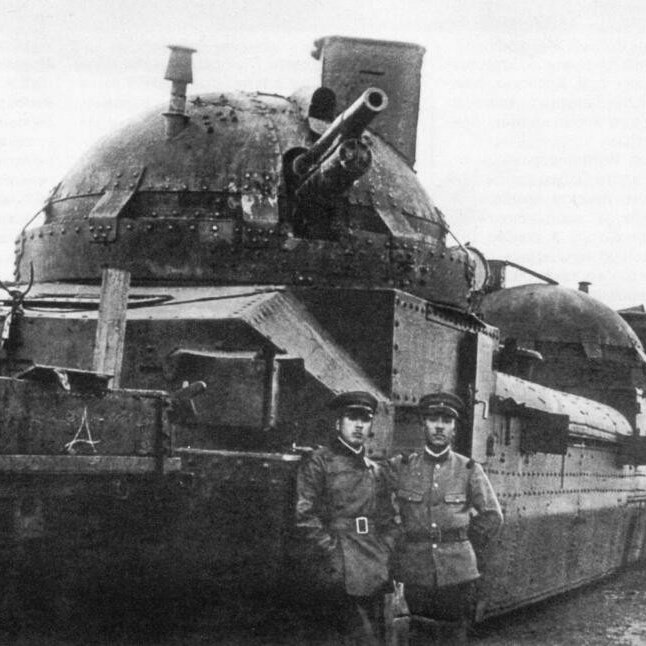
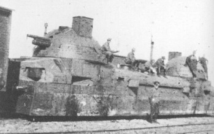
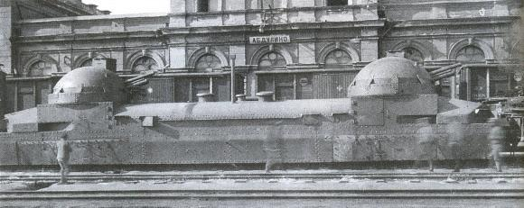
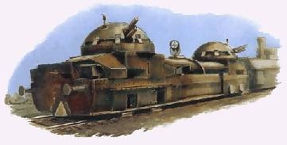
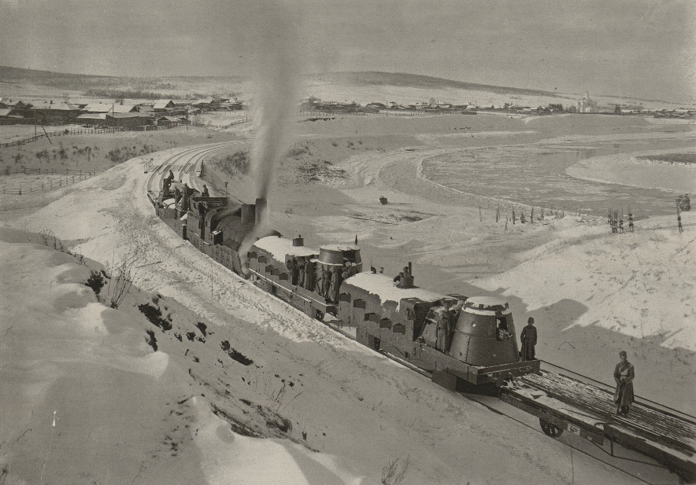

Welcome to my presentation! Instead of Mrs. Lawson teaching you, I'll be teaching you. Let's get started!
Imagine a tank with many cannons and machine guns that can go as fast as 28 miles per hour. That's Zaamurets, which is what we'll be learning about today! Press Next to continue!

Russia built Zaamurets in Odessa during 1916 as a train to fight in World War I. Russia named it Zaamurets because it means "person from beyond the Amur River." When the Bolsheviks took over during the revolution, they renamed it Lenin after their leader, Vladimir Lenin. The Czech soldiers captured it and renamed it Orlik, which means young eagle in their language. The Japanese called it Rin-go, a secret code name. In Japanese, it means apple. The Chinese warlords called it Train No. 105 as a serial number.
Why do you think each group that captured Zaamurets gave it a new name?
Zaamurets could move on its own because it had powerful engines inside—this is called being "self-propelled." It had two large cannons and a dozen machine guns. The cannons were used to destroy enemy field guns from far away. The machine guns protected against soldiers who tried to attack close to the train. To observe safely outside, the train had special periscopes and rangefinders for distant targets. The cannons could rotate 360 degrees. In just 15 years, Zaamurets traveled 6,000 miles—that's like going from the left side of the U.S. to the right side and back! Different armies kept seizing and using it, like a prize toy being passed around and around.

What do you think Zaamurets was built to protect against?
Living on Zaamurets was incredibly loud because of the powerful gasoline engines. The interior was cramped, filled with soldiers, ammunition, and weapons. For the 1900s, it was remarkably advanced technology. It had a telephone system so soldiers could communicate without shouting from the back to the front. About 50-70 soldiers inhabited it at one time. They had small bunk beds to sleep in, a compact kitchen, and a bathroom squeezed between ammunition storage.
Being in this cramped space felt like being trapped in a vibrating toaster. Gasoline fumes filled the air everywhere. The powerful engines created extreme heat. But the soldiers demonstrated remarkable strength and morale throughout their long journeys.

How would you stay happy living in a tiny, loud, hot space?
When the Czech soldiers exhausted their supply of 57mm cannon ammunition, they made a strategic decision. They removed the outdated cannons and installed more powerful 76mm cannons. This modification significantly increased the train's combat power!
Soldiers constructed armored command booths on top of the train so commanders could observe farther and coordinate defensive operations better. These modifications demonstrated the crew's ingenuity and ability to adapt. Armored trains like Zaamurets proved how soldiers could innovate during the Russian Civil War.

Why would soldiers want bigger, stronger cannons?
Zaamurets was essentially a behemoth of military engineering! Regular bullets couldn't penetrate its armor, so soldiers with conventional weapons had virtually no chance against it. However, it had one critical vulnerability: the railway tracks. If the tracks were destroyed, the entire armored train would become immobilized and defenseless.
When Zaamurets arrived in China, the general was so impressed that he commissioned the construction of additional identical trains! He linked them together to create a massive convoy a quarter mile long! These trains featured elaborate decorations of tigers and dragons. The gun turrets were curved in design, which was strategic because when a shell struck the slanted surface, it would deflect instead of detonating. Since Zaamurets had two engines, if one got damaged, the other could still keep the train moving safely.

Why do you think the general made more Zaamurets trains instead of just one?
In my assessment, Zaamurets was absolutely remarkable! It possessed nearly every capability one could imagine! Although its final fate remains unknown, it was undeniably a powerful and impressive achievement. Armored trains like Zaamurets demonstrate how soldiers developed and adapted new technologies. I hope you appreciated learning about this fascinating piece of military history!

If you owned Zaamurets, what would you name it?
✨ It weighed about 80 tons—that's about 13 African elephants!
✨ It didn't run on coal; it ran on gasoline, which made it faster to start up if enemies attacked quickly.
✨ There were tiny hatches on the floor so soldiers could escape if needed.
✨ Zaamurets could go backwards as fast as it could go forwards, which was great for getting away from danger.
✨ Armored trains during World War I and the Russian Civil War could travel up to 40 miles per hour—very fast for military vehicles back then!
✨ The curved gun turrets were designed like naval ship gun turrets, bringing sea warfare ideas to railways.
✨ It had 12-16 mm of armor.
✨ It could reach speeds up to 45 km/h (about 28 miles per hour).

✨ It weighed about 80 tons—that's about 13 African elephants!
✨ It didn't run on coal; it ran on gasoline, which made it faster to start up if enemies attacked quickly.
✨ There were tiny hatches on the floor so soldiers could escape if needed.
✨ Zaamurets could go backwards as fast as it could go forwards, which was great for getting away from danger.
✨ Armored trains during World War I and the Russian Civil War could travel up to 40 miles per hour—very fast for military vehicles back then!
✨ The curved gun turrets were designed like naval ship gun turrets, bringing sea warfare ideas to railways.
✨ It had 12-16 mm of armor.
✨ It could reach speeds up to 45 km/h (about 28 miles per hour).